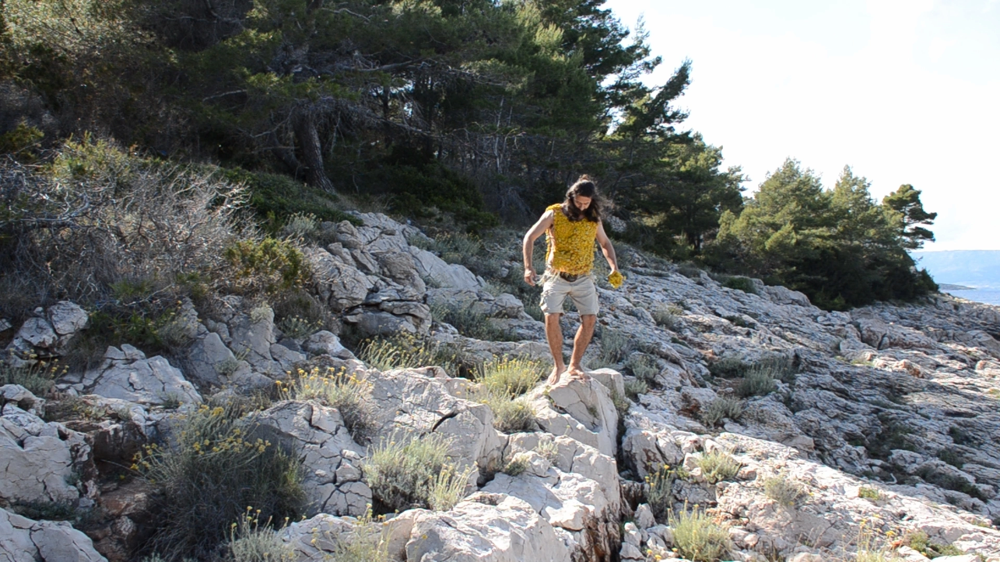
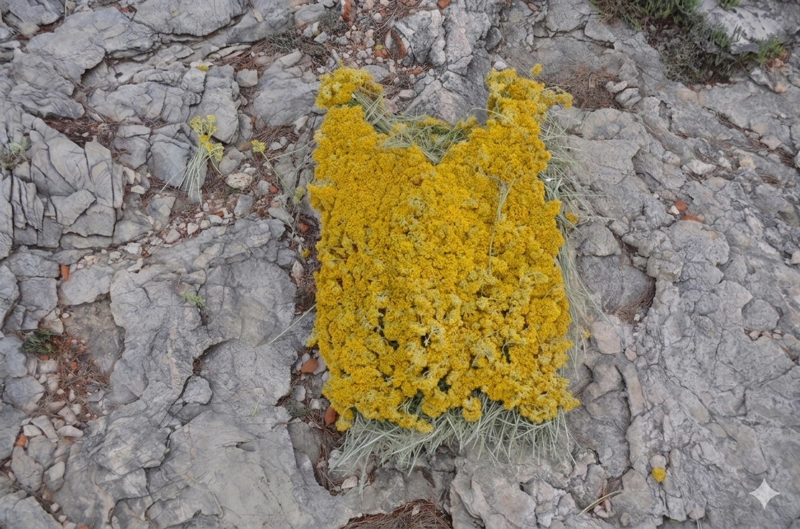
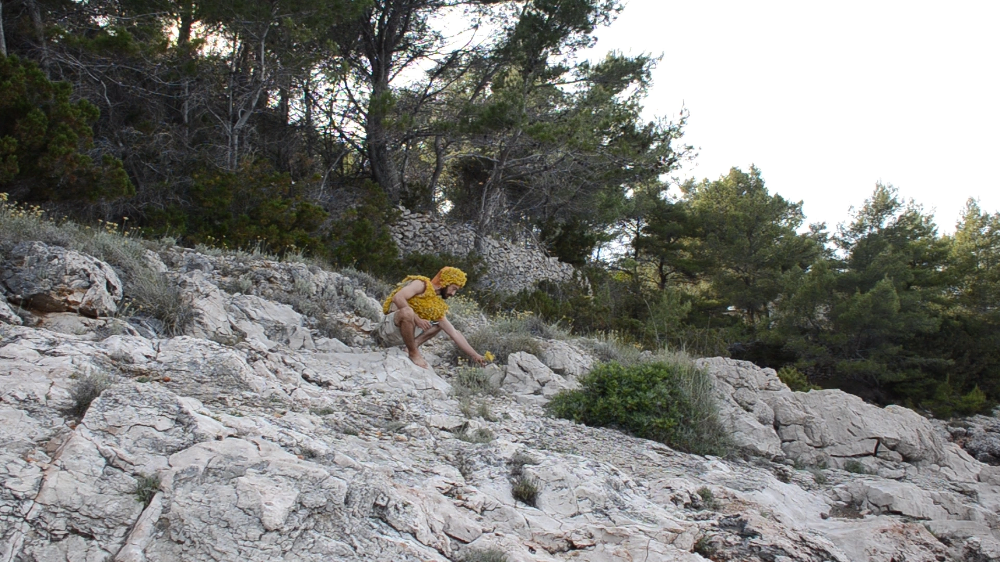

Immortelle promises
Immortelle promises is a video work in which the artist undertakes a surreal and ultimately futile attempt to collect the flowers of the immortelle plant and construct a protective armour from them. Set within a rocky coastal landscape on the island of Hvar, Dalmatia, the action stages a fragile negotiation between body, plant, and terrain, where protection becomes both impossible and absurd.
The video work is the basis for a later developed object series named Armor Series.
Immortelle promises was realized during the Jelsa Art Residency (2024), part of the program of the Jelsa Art Biennial.
.